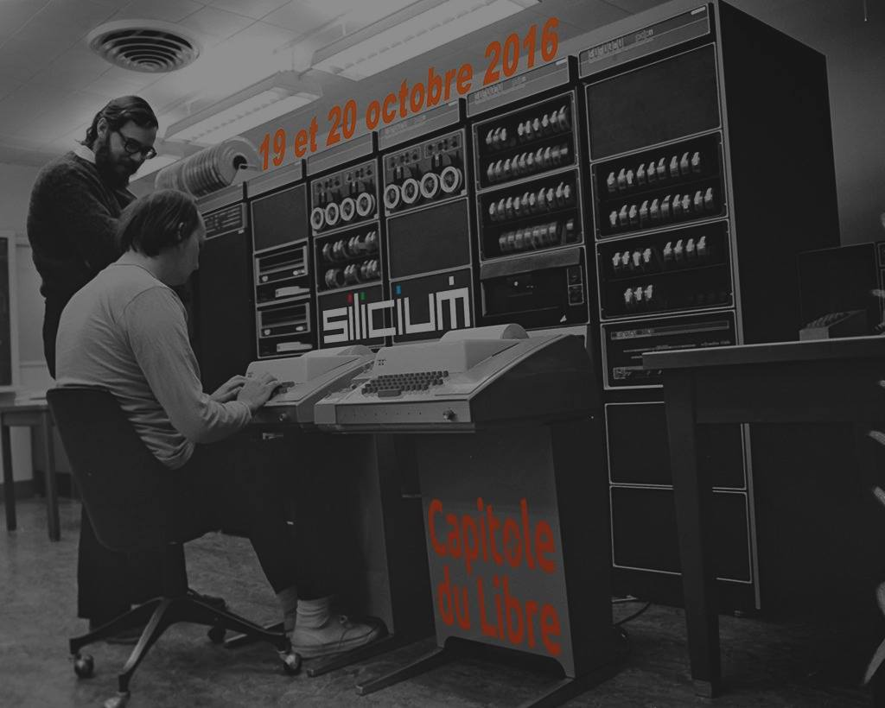
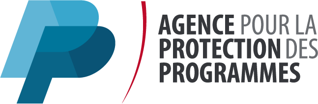
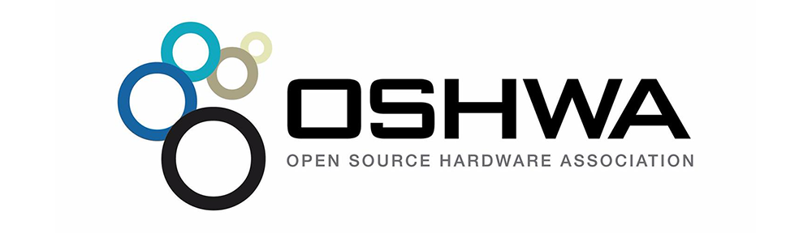

Préservation du patrimoine numérique
Yours Truly, Famous Inc.
Préservation du patrimoine numérique
-= Hardware =-
Gregory Estrade - association Silicium

Préservation du patrimoine numérique
- L'action de Silicium.
- Brevets, licences et droit d'auteur.
- Préservation du software.
- Préservation du hardware.
- Projets et actions réalisées.
Gregory Estrade - @Torlus sur GitHub, Twitter... blog: LVT.TL
L'action de Silicium (extrait)
Silicium est une association loi 1901 créée en 1994. Notre vocation est de conserver les consoles de jeu et ordinateurs anciens pour les montrer au public.
Une collection de milliers de pièces nous permet de répondre aux demandes d’expositions, de conférences ou d’animation.
Le jeu vidéo et l’informatique évoluent très vite. Promoteurs de ce patrimoine, nous cherchons des partenaires pour créer un futur musée.
Brevets, licences et droits d'auteur - Software
- Le droit d'auteur
- Licences
- Les brevets logiciels

Brevets, licences et droits d'auteur - Hardware
- Objet physique: brevets industriels
- Design: droit d'auteur
- Design: licences
Pour en savoir plus: http://www.oshwa.org/faq/

Préservation du software - Problématiques
- Code source non disponible / ouvert / libre
- Déterioration des supports
- Mécanismes de protection contre la copie
- Questions juridiques
- Formats propriétaires
Préservation du software - Initiatives
Préservation du software - Outils
- KryoFlux - Software Preservation Society
- Pasti - Atari ST Imaging & Preservation Tools
Et incontestablement le plus complet:
Présentation du HxC2001 Floppy Drive Emulator
Préservation du hardware - Problématiques
- Cadre juridique flou
- Outils, formats, technologies propriétaires
- Design non disponible / ouvert / libre
- Mécanismes de protection contre la copie
- Paradoxe de la préservation
Préservation du hardware - Initiatives
- Emulateurs - MAME & MESS
- Réimplémentations sur base de FPGA:
Préservation du hardware - Outils
- Outils d'analyse:
- Outils de réimplémentation: la logique programmable
- PAL / GAL - Programmable / Generic Array Logic
- CPLD - Complex Programmable Logic Device
- FPGA - Field Programmable Gate Array
FPGA - Théorie et pratique
- Théorie:
- Tout circuit logique peut être représenté par une composante d'état et une composante de transition (sans état)
- Organisation en Logic Blocks / Macrocells. Architecture Tutorial
- Pratique:
- Saisie de schémas (non recommandé)
- Hardware Description Languages: VHDL et Verilog
- Outils de simulation: Verilator
Fork me on GitHub